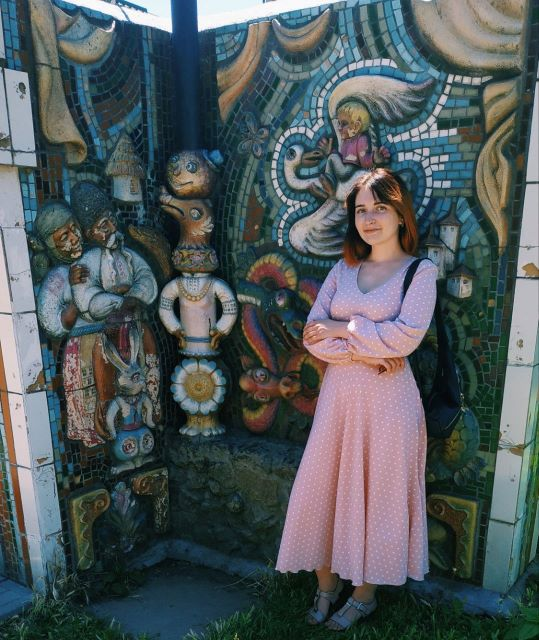

Вітаю!

Мене звати Анна.
Мені 30, зараз я живу в Харкові, куди переїхала вже коли почалась війна. Так, не наймудріше рішення, втім так склалися обставини, а ще я дуже люблю це місто. Маю освіту вчителя історії, проте працюю копірайтером. Обожнюю свою роботу, але прийшла пора реалізувати себе в більш стабільній сфері.
Мої захоплення
Окрім роботи і навчання намагаюсь не забувати і про свої захоплення:
- Музика - люблю слухати, ходити на концерти, сама вмію грати на скрипці.
-
Подорожі - до повномасштабного вторгення мені вдалося об'їздити велику частину України і декілька разів мандрувати за кордон. Перелік улюблених місць:
- Гданськ;
- Барселона;
-
Різні куточки України
- Карпати, а особливо Косів й ВерховЯина;
- Холодний Яр;
- Коропове в Харківській області;
- Книги - обожнюю читати, роблю це завжди і всюди. З останнього прочитаного особливо вразили:
- "Шумовиння днів" Бориса Віана;
- "Голоси Памано" Жауме Кабре;
- "Морт" Террі Пратчетта (взагалі люблю його всесвіт Дискосвіту);
- Рибалка.
Очікування від курсу
Вестка зацікавила мене ще декілька років тому. Я спробувала деякі безкоштовні ресурси, втім без фідбеку, можливості порадитися з фахівцями та певної структурованості знань всі спроби зійшли нанівець. Хоча приблизно в цей же час я знайшла канал Євгена, дивилась його майстер-класи і мріяла: "От би й мені так". Що ж, аби мрія перетворилася на ціль, потрібні дії, і саме тому я на курсі. Планую активно працювати над кожною темою, виконувати безліч практики і шукати додаткові завдання. Впевнена, що після закінчення курсу поглиблено вивчатиму JavaScript, аби мати більше шансів знайти роботу.
Перейти на початок сторінки